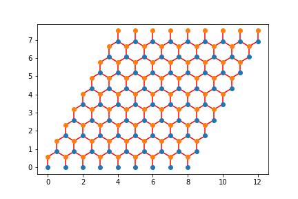

Tight Binding Models#
In this section we are going to learn how to understand when a material is a metal, semi-metal, or band insulator by getting its band structure.
Let’s start with a chain of Hydrogen atoms in one-dimension. Imagine that we have \(N\) atoms. Since each Hydrogen atom has one electrons, we also have \(N\) electrons.
We are going to consider two scenarios:
all the hydrogen atoms are the same distance apart.
the hydrogen atoms have distorted themselves so they are in pairs. This is called a Pierls Distortion and is a common thing for a 1d chain of atoms to do.
Each of these materials have a corresponding Hamiltonian \(\hat{H}\). Each Hamiltonian \(\hat{H}\) has eigenvectors \(|i\rangle\) such that \(\hat{H}|i\rangle = E|i\rangle\). There is some freedom to how you choose the eigenvectors, but if you choose your eigenvectors correctly, they also each will have a momentum \(k_i\) associated with them. Our goal will be to find the eigenvectors, their energy, and their momentum.
Then, if we have \(N\) electrons in our Hydrogen chain, it will fill the lowest \(N\) energies.
Hydrogen Chain#
If we are going to do quantum mechanics, we need to start by defining the Hilbert space. The Hilbert space we will use is the \(1s\) orbital of each Hydrogen atom. (Technically, to have a complete basis we should use all the orbitals of each Hydrogen atom but those terms are all going to be small enough to ignore. Also technically you should worry about the fact that the 1s orbitals aren’t orthogonal to each other. These are all details we will ignore but can be dealt with).
We can write out our Hilbert space as \( \\{ |\textrm{1s orbital at } \vec{x}=0\rangle; |\textrm{1s orbital at }\vec{x}=0.8\rangle; |\textrm{1s orbital at }\vec{x}=2.0\rangle;... \\} \)
We are going to get tired of writing this. Instead, we could abreviate this as \( \\{ | \vec{x}=0\rangle; |\vec{x}=0.8\rangle; |\vec{x}=2.0\rangle;... \\} \) leaving the \(1s\) implicit. Even simpler, though, in the previous section we found a way to label our real space lattice sites. So we will actually label our kets by \(|(i,\sigma);R\rangle\) were the \(R\) is to remind us that it’s a real space-ket. So for six sites this gives us \( \\{ |0,a\rangle; |1,a\rangle; |2,a\rangle,...,|5,a\rangle \\}\)
Now, it’s possible that some electron is in the quantum state \(|\Psi\rangle = |1,a\rangle\) which means that it’s completely in the 1s orbital of unit cell 1, atom a. It’s also possible though that the quantum state of an electron in the system is \(|\Psi\rangle = \frac{1}{\sqrt{2}} |1,a\rangle + \frac{1}{\sqrt{2}}|2,a\rangle\) which means that it’s in a linear superposition of being in the 1s orbital of [unit cell 1, atom a] and the 1s orbital of [unit cell 2, atom a].
Hamiltonian#
The Hamiltonian will generically look like this (where I only show 2 of the 36 different matrix elements)
 (this image has i,0 where it should have i,a)
(this image has i,0 where it should have i,a)
I haven’t told you anything yet about what \(\hat{H}\) is. But by symmetry, we already know something. Clearly anything one site apart (i.e. \(\langle i,a | H |i+1,a\rangle\) better be the same for any \(i\). Let’s just change our units so this value is -1. Now, by symmetry \(\langle i,a | H | i+2,a\rangle\) should be some other number. It will be much smaller though (it involves two orbitals much further away) so let’s just approximate it to be zero (this is a pretty good approximation). Then our matrix will look like
 (this is accidentally for \(N=7\) and not \(N=6\))
(this is accidentally for \(N=7\) and not \(N=6\))
Make a function which take \(N\) and builds this Hamiltonian. You will want to use the machinery you built up on the lattice section.
Testing
Test that your Hamiltonian is Hermitian.
Do a
pylab.matshow()on your matrix and make sure that it looks correct.
Fourier Space#
Now, we want to rotate our Hamiltonian from real space to fourier space. To do this we need a unitary matrix (actually the same one you used in your FFT for project 1). There are various ways of constructing this unitary matrix.
First define a momentum basis such that \(|j;K\rangle\) is a ket labelled by the momentum-space label.
Then
\(F_{i,j} = \frac{1}{\sqrt{N}} \langle i;R | j;K\rangle = \frac{1}{\sqrt{N}} e^{i k_j \cdot r_i}\) where \(k_j\) is momentumLabelToK((j,a)) and \(r_j\) is LabelToR((i,a)) and \(N\) is the number of unit cells.
Write code that generate the matrix \(F\).
Now you can rotate \(H\) from real space to \(k\) space by multiplying \(H^K=F^\dagger H^R F\) (I might have the dagger on the wrong \(F\)).
At this point, \(H_k\) is written in \(k\) space and is diagonal. \(H_k[i,i]\) corresponds to the energy \(E_i\) of the \(\vec{k_i}\) which corresponds to the k-index i.
Graph \(E_i\) vs. \(k_i\).
Now do this again but crank up \(N\) to be something large (like 100) and graph it again.
Throughout this assignment, we will assume we are at half-filling which means exactly half the total number of possible states are fill (so if you have \(N\) k-points then you have \(N/2\) electrons).
The Fermi Level is the line between the lowest \(N/2\) energies and the highest \(N/2\) energies. Draw the Fermi level on your graph. If the Fermi Level goes through your band, then it is a metal (or semi-metal). Otherwise you have an insulator.
Testing
Test that \(F\) is unitary (i.e. \(F F^\dagger =I\))
Do a
pylab.matshow()on your matrix \(H_k\) and make sure it looks diagonal.This is essentially the problem of a particle in the box. Think about whether your results match the expected energy from that problem.
Because of this, you should expect your curve to be \(-2\cos(k)\)
Grading
Add to your document a graph of \(E\) vs. \(k\) including a line specifying where the Fermi level is.
Distorted Hydrogen Chain#
Now, let’s consider the distorted Hydrogen chain. Things are a bit more complicated there. We start with a basis which again is labelled by the label of the lattice site. For the 3 unit cell distorted Hydrogen chain this gives us \( \\{ |0,a\rangle; |0,b\rangle; |1,a\rangle;|1,b\rangle;|2,a\rangle;|2,b\rangle \\}\)
Again we don’t know anything about the Hamiltonian but the two largest elements are going to be
\(H_{\textrm{LabelToIndex}(ia),\textrm{LabelToIndex}(ib)}= \langle (i,a) | \hat{H} | (i,b) \rangle\) (which just be choosing the right units we will take to be -1)
\(H_{\textrm{LabelToIndex}(ib),\textrm{LabelToIndex}((i+1)a)} = \langle (i,b) | \hat{H} | (i+1,a) \rangle\) (which is probably smaller but could be anything. If we were sophisticated we could calculate it but let’s just take it to be \(-0.1\)
We can assume everything else is small enough to set to 0.
Now, write code to produce the Hamiltian \(H_R\).
Again we need to rotate it into momentum space. To do this, we need to construct the unitary matrix \(F\).
Define a momentum basis such that \(|(j,\sigma);K\rangle\) is a ket labelled by the momentum-space label \((j,\sigma)\).
Then
\(F_{i,j} = \frac{1}{\sqrt{N}} \langle i;R | j;K\rangle = \frac{1}{\sqrt{N}} \delta_{\sigma,\sigma'} e^{i k_j \cdot r_i}\) where \(k_j\) is momentumLabelToK(momentumLabels(N)[j]), \(\sigma\) is momentumLabels(N)[j][1], \(r_i\) is LabelToR(Labels(N)[i]) and \(\sigma'\) is Labels(N)[i][1].
(Note, there are 6 Hydrogen atoms but 3 unit cells. This means there are only 3 \(k\) points of two types of atom. The \(F\) matrix is then going to be \(6 \times 6\).) Make \(F\).
Now you can again rotate your Hamiltonian \(H^K = F^\dagger H^R F\)
Your Hamiltonian should now be block diagonal with \(2 \times 2 \) matrices. The \(i'th\) block corresponds to \(k_i\). You can diagonalize each block and from block \(i\) you get two energies \(E_{i1}\) and \(E_{i2}\). Make sure to use np.linalg.eigh so that you get sorted, real eigenvalues.
Plot \(E_{i1}\) and \(E_{i2}\) vs \(k_i\). This will give you two bands.
Again increase \(N\) so that it is large and draw a line at the Fermi Energy. Your two bands should look like an insulator
Testing
Do a
pylab.matshow()and make sure your real-space Hamiltonian looks right.Make sure your real-space Hamiltonian is Hermitian.
Test that \(F\) is unitary (i.e. \(F F^\dagger =I\))
Do a
pylab.matshow()on your matrix \(H_k\) and make sure it looks block diagonal.In the limit where \(t=t'\) this should somehow reduce to the non-distorted Hydrogen chain. Does it? Do your results make sense?
When \(t \neq t'\), you expect to see a gap in the system (i.e. there will be 2 bands).
Grading
Add to your document a graph of \(E\) vs. \(k\) including a line specifying where the Fermi level is.
Graphene#
Our next step is to do graphene. Again our real space basis is going to be indexed by the labels of our real space lattice and the momentum space basis is indexed by the labels of our reciprocal space lattices.
For our Hamiltonian \(H\), we will set the Hamiltonian so that the nearest neighbor distance has value -1 and everything else is 0. To determine the nearest neighbors, figure out the label of your three nearest neighbors given your label and then use LabelToIndex(myLabel) to convert them into their respective index.
Construct your Hamiltonian \(H^R\).
Note: You should be identifying the neighbors using the labels. If you’re doing this the simplest way, there should be no if statements in your constructing of the neighbors (even to get the periodic boundaries right).
Testing
Check that your neighbors are correct. One way to do this is to loop over all the \((i,j)\) elements of your Hamiltonian and graph a line between LabelToR(myLabel[i]) and LabelToR(myLabel[j]) You should get something that looks like a honeycomb.
Here are my pictures:
Note Wrapped: 
Wrapped:
To rotate to momentum space we construct \(F\) in exactly the same way that it was constructed in the distorted Hydrogen chain.
\(F_{i,j} = \frac{1}{\sqrt{N}} \langle i;R | j;K\rangle = \frac{1}{\sqrt{N}} \delta_{\sigma,\sigma'} e^{i \vec{k}_j \cdot \vec{r}_i}\) where \(\vec{k}_j\) is momentumLabelToK(momentumLabels(N1,N2)[j]), \(\sigma\) is momentumLabels(N1,N2)[j][1], \(\vec{r}_i\) is LabelToR(Labels(N1,N2)[i]) and \(\sigma'\) is Labels(N1,N2)[i][1] where \(N\) is the number of unit cells.
Now you can again rotate your Hamiltonian \(H^K = F H^R F^\dagger\) Your Hamiltonian should now be block diagonal with \(2 \times 2 \) matrices. The \(i'th\) block corresponds to \(\vec{k_i}\) . You can diagonalize each block and from block \(i\) you get two energies \(E_{i1}\) and \(E_{i2}\).
At this point you should plot \(E\) vs. \(k_x\) and \(k_y\). You should find that you have two bands now.
Plotting them is a bit harder now. Here are three approaches:
import matplotlib.pyplot as plt
from mpl_toolkits.mplot3d import Axes3D
fig = plt.figure()
ax = fig.add_subplot(111, projection='3d')
ax.plot_trisurf(all_kx,all_ky,E)
will plot it in three-dimensions (I actually plotted it once for the energies that are greater then zero and once for the energies less then zero)
I find three-dimensional plots really hard to look at though. So instead I actualy find it more fruitful to loop over all the possible \(k_x\) and plot slices through \(k_y\). I did it roughly like this:
Finally, it is somewhat instructive just to plot a contour of the gap between the two energy values.
What you should see from these analysis is that the system is gapless at two points. These are “dirac cones” and if you look at the energy around these two dirac points you will find that they are lienar.
This is the band structure of graphene and is called a semi-metal (because the system is gapless but only at two points. You can constrast this against the result you would get if you did this with a square with uniform hopping which is a metal).
Testing
Test that \(F\) is unitary (i.e. \(F F^\dagger =I\))
Do a
pylab.matshow()on your matrix \(H_k\) and make sure it looks block diagonal (with 2x2 blocks).Check that there are two points with a zero gap. If this is hard to see from your image, subtract the two energies and see.
Grading
Add to your document a pylab.matshow of your \(\bar{H}^K\), plot of \(E\) vs. \((k_x,k_y)\), one two-dimensional slice through the three-dimensional plot that includes the gapless point, and a plot of the gap vs. \((k_x,k_y)\).
Boron Nitride#
10% of the grade

In Boron-Nitride you have the same lattice as graphene but the energy of the Boron and Nitrogen atoms are different. You’ve produced the band structure for a semi-metal. Now, we’d like to learn to open a gap in the system. We are going to see two different ways to go ahead and open up a gap. The first approach will be to add a staggered chemical potentials to the “a” and “b” sites. In other words \(H_{(ia)(ia)}=M\) and \(H_{(ib)(ib)}=-M\). Note there is no change to \(H_{(ia)(ja)}\)
Go ahead and implement this Hamiltonian for some value of \(M\) and check that you’ve suceeded in opening a gap. This is a non-topological insulator (but we don’t know that yet!).
Grading
Add to your document a pylab.matshow of your \(H^K\), plot of \(E\) vs. \((k_x,k_y)\) and a plot of the gap vs. \((k_x,k_y)\).
Haldane Model#
10% of the grade

This is the final Hamiltonian we will work with. The hops in the direction of the arrow are \(-t' e^{i\phi}\) (in the direction opposite of the arrow is \(-t' e^{-i\phi}\) (You have to add the arrows on all the hexagons including the ones that go around the periodic boundary conditions. Use \(t'=0.3,\phi=0.7,M=0.1\)
First build this Hamiltian with \(M=0\). It’s really easy to mess up this Hamiltonian so you should check the Hamiltonian you built was Hermitian.
An easy mistake to make is to get the direction of the arrows on one of the sublattices wrong so one thing to try is to swap the sign of the phase.
Grading
Add to your document a pylab.matshow of your \(H^K\), plot of \(E\) vs. \((k_x,k_y)\) and a plot of the gap vs. \((k_x,k_y)\). Show this for a couple snapshots of \(M\).